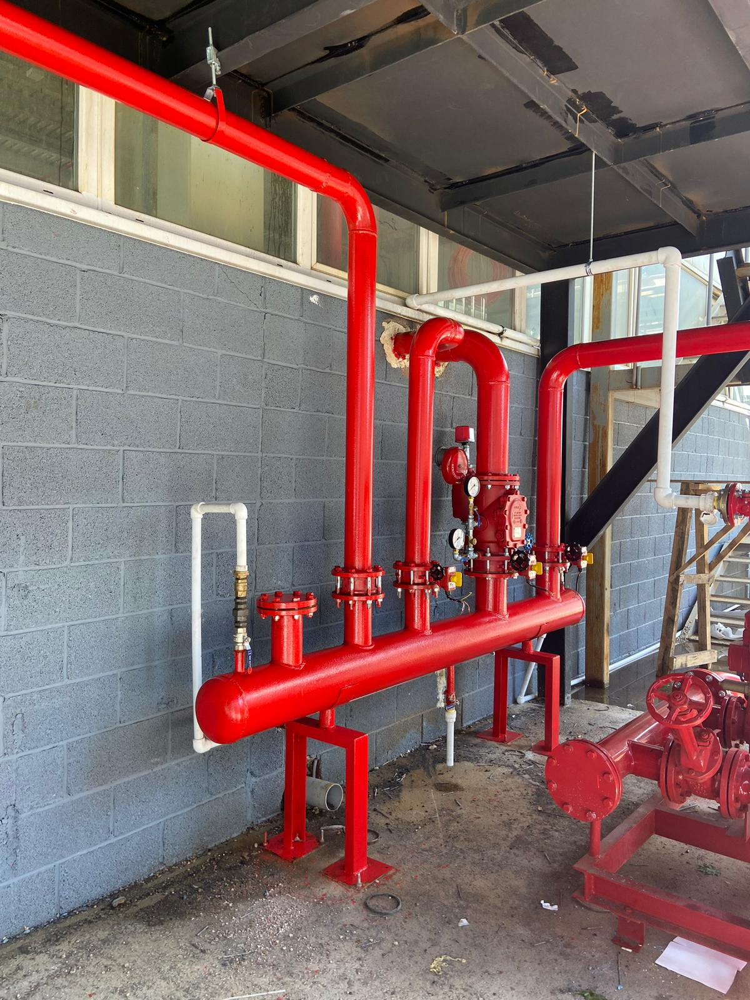

01 · GÜVENLİK SİSTEMLERİ
Yangın Tesisatı
Yapılarınızın yangın güvenliğini standartlara uygun sistemlerle destekliyor; uygulamayı kontrollü biçimde devreye alıyoruz.
- Sprinkler sistemleri
- Hidrant hatları
- Yangın pompa dairesi
- Test ve devreye alma